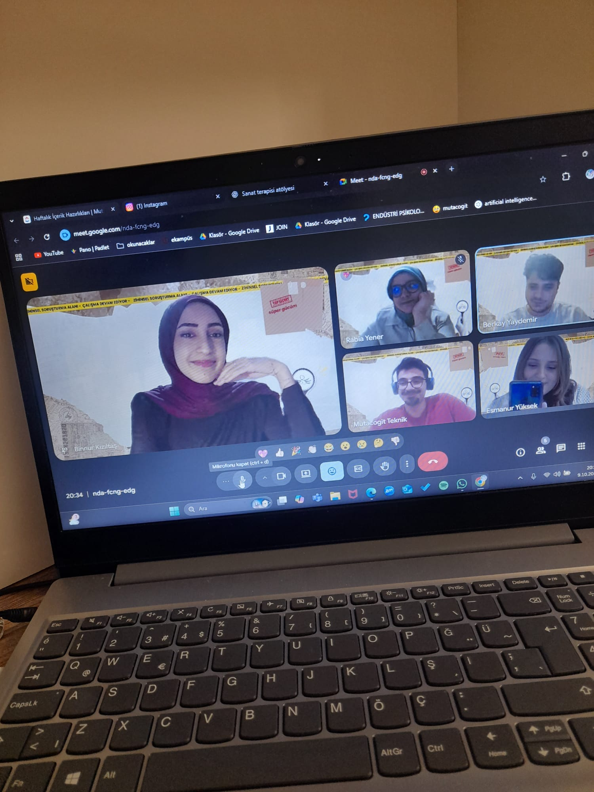
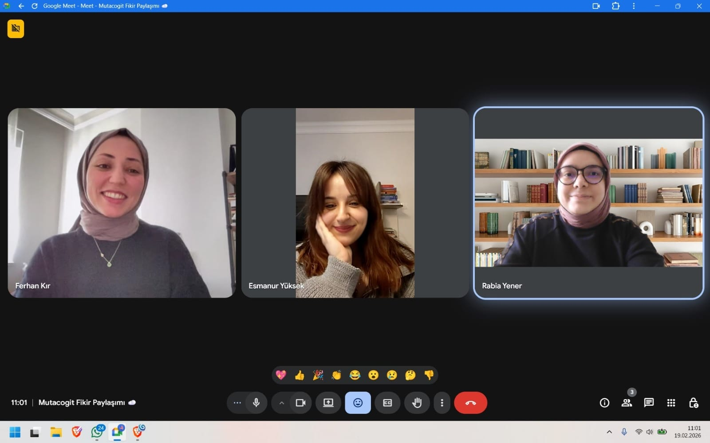
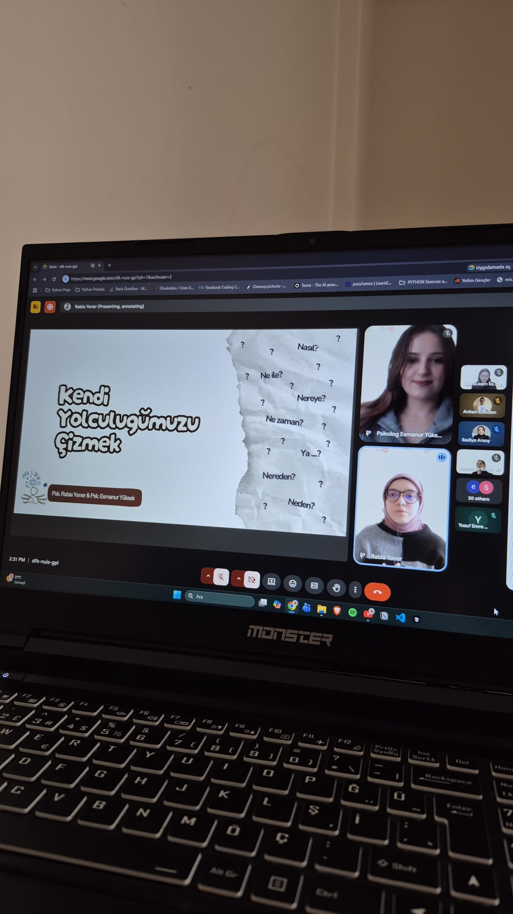
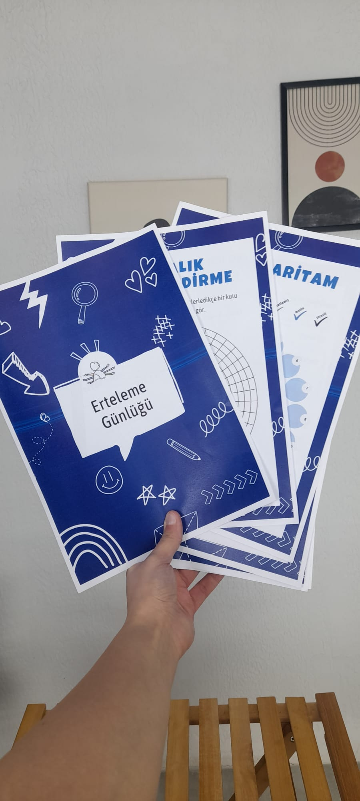
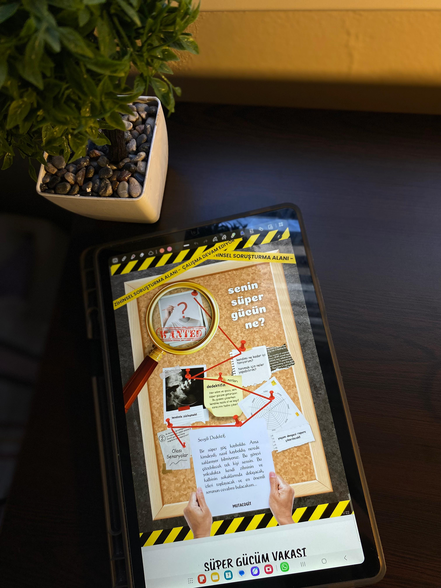

"Düşünmeye Cesaret Et!"
Hikayemiz hafızanın tecessümü olan Mnemosyne Nehri kıyılarında başlıyor… Kendisinden içenlere yaşamları hakkındaki her şeyi hatırlattığı söylenen bu nehrin kıyısında yürüyen iki dostun dikkatini büyük bir taş çeker. Taşın altında bir şey olup olmadığını merak ederler ve el ele verip taşı kaldırırlar. Tam o sırada taş nehre düşer. Taşın altından bir şey çıkmasa da eylemleri onlara yepyeni bir ufuk kazandırır:
"Taşın düşmesiyle suyun yüzeyinde oluşan halkaların genişleyerek yayılması gibi zihnimize dokunan küçük düşünce kıvılcımlarının, içimizde ve çevremizde dönüşerek büyüyebileceği hayali…"
Aslında, Mnemosyne Nehri gerçek olmasa bile bu hikaye gerçek. Bu iki dost; bu hayalden yola çıkarak kendi yolunu keşfetmek isteyen herkesin buluştuğu bir alan yaratma amacıyla Mutacogit’i hayata geçirdi.
Değişim (mutatio) ve düşünce (cogitatio) kelimelerinden oluşan Mutacogit; tek bir yöne değil, birden fazla alana merak duyanlar için bir buluşma noktası.
Düşünce özgürlüğüne, güvenilirliğe, bilimsel temele ve birlikte öğrenmeye değer veren herkesin kendini ifade edebileceği, bir arada gelişebileceği bir yer. Öğreten değil, eşlik eden bir dost; kendi yolunuzu çizerken sizle yürüyen bir rehber olmayı amaçlıyor.
Rehber demişken; aramıza katıldığınızda sizi ilk olarak "Mutiş" karşılayacak. Mutiş, yaşam nehrinin ortasında dururken nehrin akışına birlikte yön vermek için elinizden tutmaya çalışacak.
Psikoloji, felsefe, sosyoloji, sanat gibi farklı alanlarda size el uzatan bu eşsiz eşlikçiniz, kimi zaman içsel bir yolculukta size rehberlik eder, kimi zaman ise keşfedeceğiniz yeni dünyaların kapılarını aralar.
Daha fazla bilgi alBirlikte keşfedeceğimiz sonsuz bir düşünce yolculuğunda, zihinsel becerilerini geliştirmek, kişisel gelişimine katkı sağlamak ve çevrende iyilik halini yaymak istersen Mutacogit’de senin için de bir yer ayırdık.
Hmmm… Sanırım şöyle açıklayabiliriz; düşünmek, dönüşmek, düşündükçe dönüşmek, dönüştükçe düşünmek ve akıntıda çırpınmak yerine akıntının bir parçası olmak için el ele tutuşacak dostlar arıyor. Paylaşımlar, düşünceler, duygular, yazılar ve atölyeler aracılığıyla bu dostları buluşturmayı ve bu yolu birlikte yürürken durup dinlenebilecekleri ve birlikte güçlenebilecekleri bir alan olmayı amaçlıyor.
Çıktığımız bu yolda bizim ve Mutiş’in elinden tutabilirsin. İçeriklerimiz yoluyla düşünce dünyamızı gezintiye çıkabilirsin. Gerçekleştireceğimiz atölyelerde dönüşümümüze eşlik edebilirsin. Ve bu yolun kıvrımlarını sen çizebilir, akıntıya sen yön verebilirsin.
Birlikte düşünerek dönüştüğümüz anlardan kareler...




